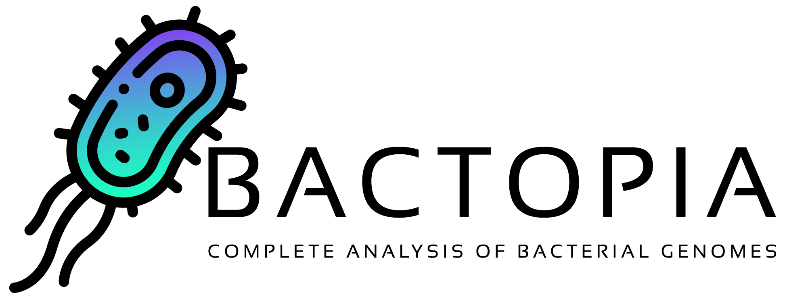

Introduction

-
Set up in minutes
Install
bactopiafrom Bioconda and start processing genomes in minutes -
Effortless bacterial genomics
Streamlined pipeline for efficient and complete analysis of bacterial genomes
-
Seamlessly expand analyses
Rapidly extend studies with a variety of supplementary, ready-made, workflows
-
Making an impact
A free and open-source tool that regularly contributes back to the community
Overview¶
Bactopia is a flexible pipeline for complete analysis of bacterial genomes. The goal of Bactopia is process your data with a broad set of tools, so that you can get to the fun part of analyses quicker!
Bactopia was inspired by Staphopia, a workflow we (Tim Read and myself) released that is targeted towards Staphylococcus aureus genomes. Using what we learned from Staphopia and user feedback, Bactopia was developed from scratch with usability, portability, and speed in mind from the start.
Bactopia uses Nextflow to manage the workflow, allowing for support of many types of environments (e.g. cluster or cloud). Bactopia allows for the usage of many public datasets as well as your own datasets to further enhance the analysis of your sequencing. Bactopia only uses software packages available from Bioconda and Conda-Forge to make installation as simple as possible for all users.
To highlight the use of Bactopia and Bactopia Tools, we performed an analysis of 1,664 public Lactobacillus genomes, focusing on Lactobacillus crispatus, a species that is a common part of the human vaginal microbiome. The results from this analysis are published in mSystems under the title: Bactopia: a flexible pipeline for complete analysis of bacterial genomes

Documentation Overview¶
Quick Start
Straight the point details for getting started with Bactopia.
Installation
More detailed information for getting Bactopia set up on your system.
Beginner's Guide
A guide to essential parameters for getting started with Bactopia
Workflow Steps
A step-by-step walkthrough of the Bactopia workflow
Full Guide
A complete guide to all steps in Bactopia
Changelog Usage
The full set of parameters that users can tweak in Bactopia.
Acknowledgements
A list of datasets and software (and many thanks!) used by Bactopia.
Funding¶
Support for this project came (in part) from an Emory Public Health Bioinformatics Fellowship funded by the CDC Emerging Infections Program (U50CK000485) PPHF/ACA: Enhancing Epidemiology and Laboratory Capacity, the Wyoming Public Health Division, and the Center for Applied Pathogen Epidemiology and Outbreak Control (CAPE).

Citing Bactopia¶
If you use Bactopia in your analysis, please cite the following.
Petit III RA, Read TD Bactopia - a flexible pipeline for complete analysis of bacterial genomes. mSystems 5 (2020)